ラリー競技およびスピード競技における安全ベルトに関する指導要綱_2027
P.1ラリー競技およびスピード競技における安全ベルトに関する指導要綱
１．シートベルト（Seat belt、Safety harnesses）
衝突時に、乗員を保護するのが最大の目的であり、モータースポーツの安全性をより高めるため装備、装着が義務付けられる。競技参加者は、自らを保護するという意識を高めこれらの効果的な装備、装着の重要性を認識する必要がある。
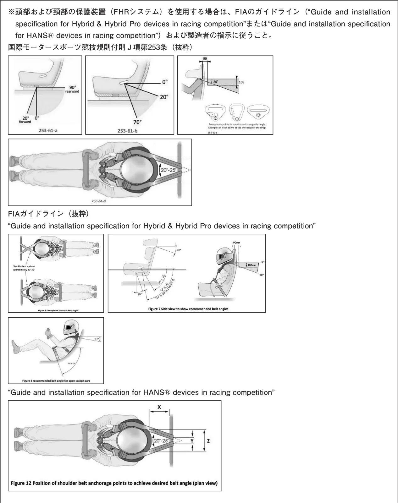
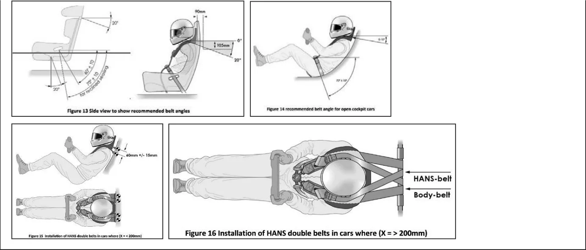
２．シートベルトの形式
１）３点式（Three point seat belt）（図１参照）
・腰部および胸部を拘束するため、腰の両端と肩に着用する３点支持形式のもの。
・衝突時の乗員保護性能に優れ、実用性も高く最も標準的な形式。
・車体への取り付け点数：３点
２）フルハーネス式（Full harness seat belt）（図２参照）
・少なくとも、１本の腰部拘束用ベルトと２本、またはそれ以上の胸部拘束用ベルトからなる形式のもの。
・拘束性は１番優れている。
・車体への取り付け点数：３点、４点、５点、６点
・Ｙタイプ（図３参照）：
２本の胸部拘束用ベルトを持つが、途中で１本になりそのまま車体へ取り付けられるベルト、いわゆる「Ｙ字レイアウト」の胸部拘束用ベルトの使用は禁止される。
３．競技における装備、装着
１）自動車製造業者により装備されたものと同等以上の機能、性能を有する3点式以上を乗員の数だけ装備し、競技中は常に装着すること。
２）３点式においては「押しボタン式バックル（Enclosed push button buckle）：
ボタンを押し込んでタングプレートを解離するバックル」を装備すること。（図５参照）
３点式シートベルト（Three point seat belt）（図１）
1．タングプレート
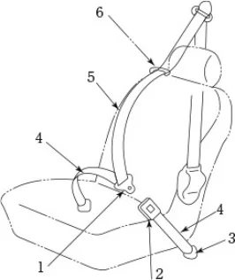
2．バックル
3．取り付け金具
4．腰ベルト（ストラップ）
（ウエビング）
5．肩ベルト（ストラップ）
（ウエビング）
6．ベルトガイド
P.3フルハーネス式シートベルト（Full harness seat belt）（図２）
1．タングプレート
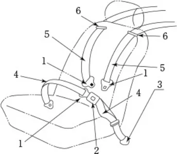
2．バックル
3．取り付け金具
4．腰ベルト（ストラップ）
（ウエビング）
5．肩ベルト（ストラップ）
（ウエビング）
6．ベルトガイド
フルハーネス式の５点式シートベルト
1．脚ベルト
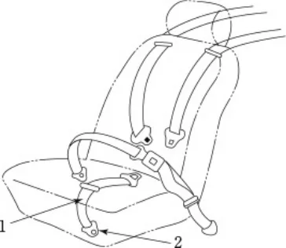
2．取り付け金具
Ｙタイプの肩ベルト（図３）
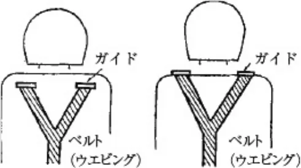
※使用は禁止される。
肩ベルトのレイアウト（図４）
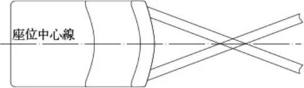
押しボタン式バックル（図５）
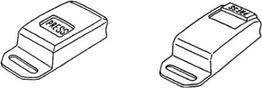
４．車体側への取り付け
１）取り付け位置（Anchor point）
シートベルトの取り付け位置は一般的には下図に示す範囲内で装備、装着することが好ましい。
ラップベルト取り付け具の間隔はシート幅以上であることが望ましい。
P.4好ましくない取り付け具位置とベルト角度（図６）
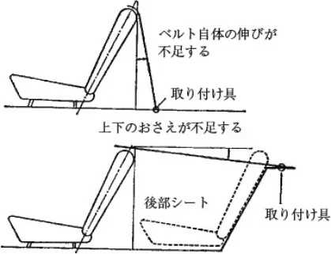
２）車体側取り付け構造
取り付け具は器具本体およびボルト、ナット、座金、補助座金などで構成され、各取り付けは単式とする。
車体側に固定する取り付け具のボルト、およびナットのネジは下記の通りとする。
| ネジの呼び名および等級 | ナットの有効ネジ部の長さ | ボルトの引張荷重 |
| 7/16—20UNF—2Aおよび2B | 約１０ｍｍ | 2,270kgf｛22.26kN｝ |
（ねじはJIS B0208を参照）
取り付け部はいかなる場合でも２ｍｍ以上動いてはならず、車体構造上の必要により補助座金を付けなければならないとき、もしくはメーカーの取り付け部を使用しないで新設する場合は、必ず次の補助座金を使用しなければならない。
補助座金は鋼鉄製とし、ボルト穴の径はJIS B1001の２級以上とし、座金のかどは半径６ｍｍ以上の丸、または６ｍ ｍ以上の４５度面取りを行うこと。なお、スピードＡＥ車両において、動力バッテリーの配置や配線等により、車体への腰部ラップベルト取り付け部の新設が困難な場合に限り、シートレール（当該車両のメーカーラインオフ時に装着されているもの、もしくは道路運送車両の保安基準（昭和２６年運輸省令第６７号）に適合したものに限る）の３点式シートベルトバックル取り付け部に取り付け具のボルトを設けることが認められる。
座金の寸法は下記の通りとする。
| 板厚（mm） | 有効面積（cm2） | 座金の縁からボルト穴中心までの距離（mm） |
| １.５以上 | ２５以上 | １２以上 |
取り付け具の種類（図７）
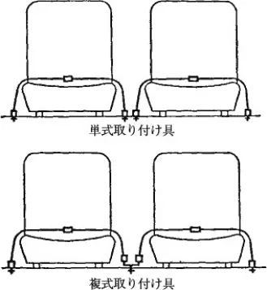
座金のかど（図８）
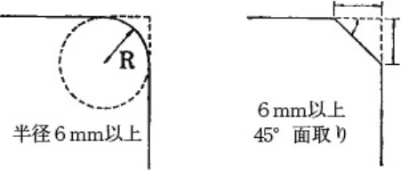
P.5全般的な取り付け方法（図９）
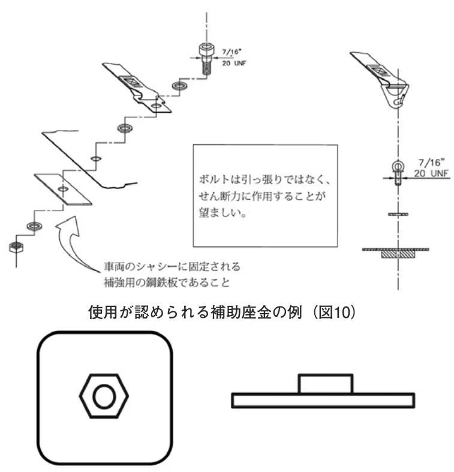
３）改造、加工の禁止
自動車製造者、あるいはシートベルト製造者によりシートベルトに当初から組み込まれ、あるいは構成されている以下の部品は一切改造、加工してはならない。
（１）ストラップ（Strap）（５）ボルト（Bolt）
（２）バックル（Buckle）（６）ワッシャー（Washer）
（３）タング（Tongue）（７）その他構成部品
（４）取り付け具（Anchor plate）
４）その他について
（１）ウエビングの取り付け具への通し方は、下図の方法がゆるみに対して効果的である。
ベルトの通し方（図11）
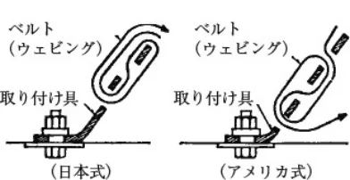
（２）肩ベルトの車体への取り付け点をロールケージとする場合は、国際モータースポーツ競技規則付則J項第253条
6.2に従うこと。
（３）「レース競技における安全ベルトに関する細則」に従った取り付け方法についてもその使用が認められる。
５．維持、管理と寿命
１）ウエビングは使用頻度、あるいは化学薬品や太陽光線により劣化するので、常にその状況を点検、確認すること。
２）一部が切断したり、擦り切れたウエビングは交換すること。
３）ウエビングにベンジンや、ガソリン等の有機溶剤を付着、浸透させてはならない。
付着、浸透させた場合は性能が落ち、十分な効果を発揮できなくなる恐れがあるので、交換すること。
４）バックル、タング等の金属部品に曲がり、変形、錆、作動不良等の劣化が認められた場合は、交換すること。
５）万一事故により、シートベルトに強い衝撃を受けた場合、ウエビング、構成部品等の外観に異常がなくても再使用してはならない。